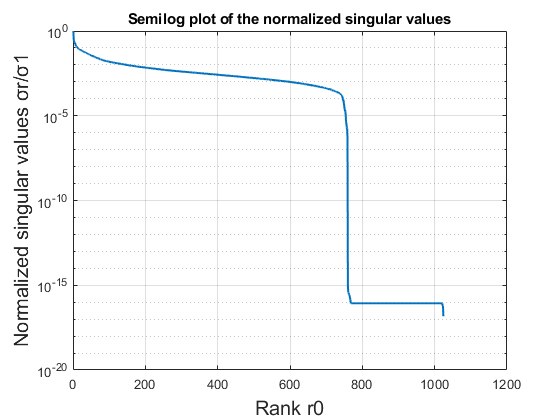
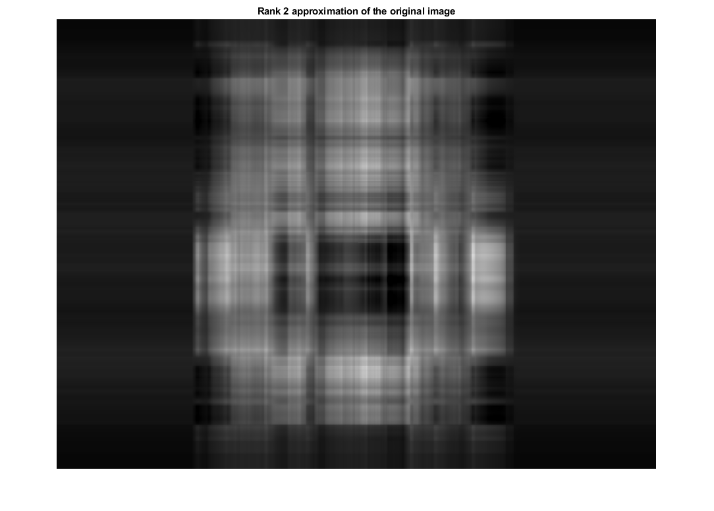
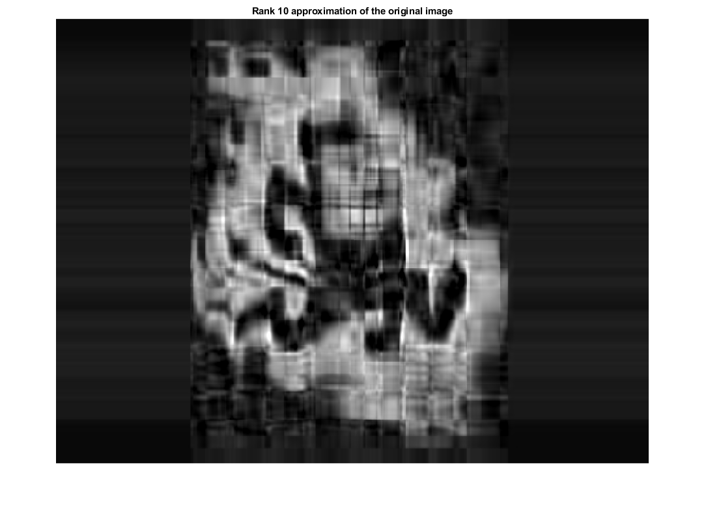

function[r0,c]=project_1226315950(image)
clear
clc
close all
fprintf("Select any grayscale image of any size:\n");
I = uigetfile;
image = importdata(I);
imshow(image)
axis off
title('Original image');
[M, N] = size(image);
x=im2double(image);
[U,S,V] = svd(x, "econ");
S_norm = diag(S);
S_norm = S_norm/S_norm(1);
figure(2);
semilogy(S_norm,'Linewidth',1.5);
title('Semilog plot of the normalized singular values');
grid on
xlabel('Rank r0','FontSize',15);
ylabel('Normalized singular values σr/σ1','FontSize',15);
r0 = find( S_norm<0.01, 1);
fprintf('\nValue of r0 for σr0/σ1 = 0.01 is : %d\n',r0);
c = (r0*M + r0*N + r0)*100/(M*N);
fprintf('Compression ratio for rank-r0 approximation = %f\n',c);
figure
rank = 2;
S2 = S;
S2(3,end,:) =0;
S2(:,3:end)=0;
compressed = U*S2*V';
imshow(compressed)
axis off
c =(rank*M + rank*N + rank)*100/(M*N);
title(['Rank ' int2str(rank) ' approximation of the original image',])
fprintf('\nCompression ratio for rank %d approximation = %f\n', rank, c);
fprintf('Comment: Rank 2 image is very blur as compared to other rank images and cannot be seen whats the image is all about.\n')
figure
rank = 10;
S10 = S;
S10(11,end,:) =0;
S10(:,11:end)=0;
compressed = U*S10*V';
imshow(compressed)
axis off
c =(rank*M + rank*N + rank)*100/(M*N);
title(['Rank ' int2str(rank) ' approximation of the original image'])
fprintf('\nCompression ratio for rank %d approximation = %f\n', rank, c);
fprintf('Comment: Rank 10 image is blur than higher rank images but clearer than Rank 2 and slightly visible about what is in the image.\n')
figure
rank = 50;
S50 = S;
S50(51,end,:) =0;
S50(:,51:end)=0;
compressed = U*S50*V';
imshow(compressed)
axis off
c = (rank*M + rank*N + rank)*100/(M*N);
title(['Rank ' int2str(rank) ' approximation of the original image'])
fprintf('\nCompression ratio for rank %d approximation = %f\n', rank, c);
fprintf('Comment: Rank 50 image is visible but quality is degraded as comapred to Rank 100 and better quality than previous Ranks and image can be seen.\n')
figure
rank = 100;
S100 = S;
S100(101,end,:) =0;
S100(:,101:end)=0;
compressed = U*S100*V';
imshow(compressed)
axis off
c = (rank*M + rank*N + rank)*100/(M*N);
title(['Rank ' int2str(rank) ' approximation of the original image'])
fprintf('\nCompression ratio for rank %d approximation = %f\n', rank, c);
fprintf('Comment: Rank 100 image is very clear as comapred to earlier Ranks and image is clearly seen.\n')
figure
rank = r0;
Sr0 = S;
Sr0(r0+1,end,:) =0;
Sr0(:,r0+1:end)=0;
compressed = U*Sr0*V';
imshow(compressed)
axis off
c = (rank*M + rank*N + rank)*100/(M*N);
title(['Rank ' int2str(rank) ' approximation of the original image'])
fprintf('\nCompression ratio for rank r0 (Rank %d) approximation = %f\n', rank, c);
fprintf('Comment: Visual quality of Rank r0 image depends upon the value of r0, if r0 is greater than 100 then the image quality will be better than Rank 100 image\n and if r0 is less than 100 then the image will be degraded quality than Rank 100 image.\n');
end
Select any grayscale image of any size:
Value of r0 for σr0/σ1 = 0.01 is : 149
Compression ratio for rank-r0 approximation = 25.477192
Compression ratio for rank 2 approximation = 0.341976
Comment: Rank 2 image is very blur as compared to other rank images and cannot be seen whats the image is all about.
Compression ratio for rank 10 approximation = 1.709879
Comment: Rank 10 image is blur than higher rank images but clearer than Rank 2 and slightly visible about what is in the image.
Compression ratio for rank 50 approximation = 8.549393
Comment: Rank 50 image is visible but quality is degraded as comapred to Rank 100 and better quality than previous Ranks and image can be seen.
Compression ratio for rank 100 approximation = 17.098787
Comment: Rank 100 image is very clear as comapred to earlier Ranks and image is clearly seen.
Compression ratio for rank r0 (Rank 149) approximation = 25.477192
Comment: Visual quality of Rank r0 image depends upon the value of r0, if r0 is greater than 100 then the image quality will be better than Rank 100 image
and if r0 is less than 100 then the image will be degraded quality than Rank 100 image.
ans =
149
  